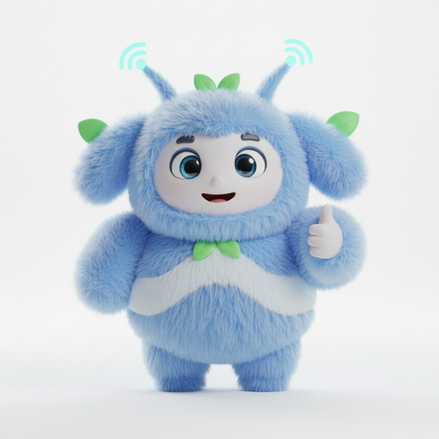

Labubik
Главный герой — мягкий и дружелюбный. Любит обниматься, всегда рядом, чтобы поднять настроение.
Особенности: мягкий, пушистый, фотогеничный, идеален для обнимашек.
Вселенная мягких компаньонов — узнай каждого
Labubik — это коллекция мягких персонажей, созданных чтобы дарить уют, тепло и радость. Каждый Лабубик имеет свой характер, любимые вещи и особую роль в твоём доме: кто-то помогает засыпать, кто-то — веселит, а кто-то — светит в ночи. Ниже — карточки с 10 Лабубиками, где ты можешь посмотреть фото и прочитать описание.
В коллекции есть особенный 10-й — Mystibik. Он скрыт и появляется только в специальных версиях и подарочных наборах. Его можно открыть в комплекте с эксклюзивной упаковкой.